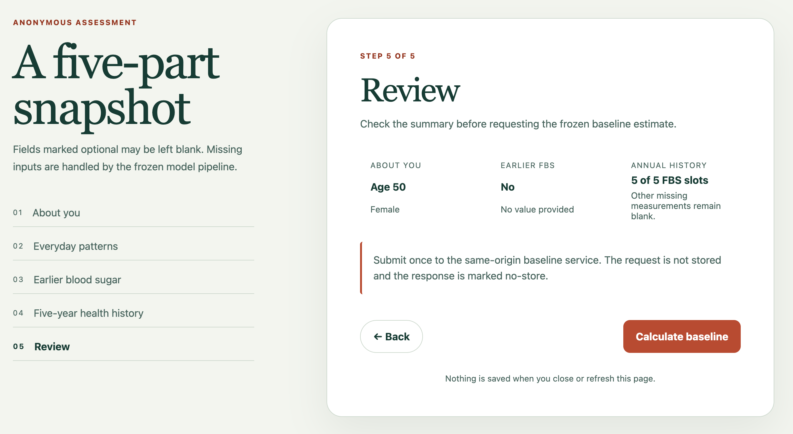

Precision–recall AUC
PR-AUC rose from the one-year to the five-year horizon as event prevalence increased.
IEEE EMBS BHI · 2026
Chulalongkorn University
Synthetic profile from the paper
Both scenarios start from the same baseline. Differences depend on literature-derived assumptions.
Study results
The team evaluated the baseline scorer using 2005–2016 health-check records from 6,892 individuals. Patients were kept separate across training and test sets.
PR-AUC rose from the one-year to the five-year horizon as event prevalence increased.
At five years, the mean predicted probability was 17.2% and the observed event rate was 16.5%.
Across 772 complete profiles and 16 endpoint combinations, the point-ranked winner often changed as assumptions varied.
When the top plan changed, the median absolute five-year scenario gap was 0.84 percentage points. At the 95th percentile it reached 5.05 points. The interface therefore shows several alternatives and their rank ranges.
Interface walkthrough
The server scores the submitted history once. The browser holds those probabilities fixed as the reader explores changes in BMI, exercise, fruit and vegetable intake, and sugary drinks.

Figure 2 uses a synthetic profile scored for the paper. The public platform demo supplies fixed illustrative probabilities. Individual treatment benefit, external validity and user comprehension remain unverified.
Citation & resources
Khlaisamniang P, Chaiwattanayon B, Chaiteerakij R, Sirinara P. Design and Verification of an Interactive Dysglycemia Risk-Awareness Service with Bounded What-If Simulation. IEEE EMBS BHI, 2026.